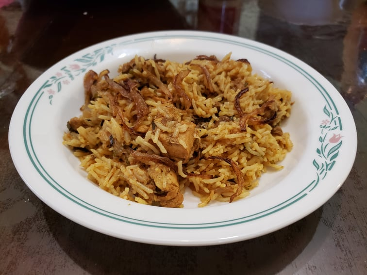

Biryani

Ingredients:
Marinade:
- 1 1/2 lb Chicken thighs, boneless, skinless, cut into bite-size cubes
- 3 tbsp Plain yogurt
- 1 1/4 tbsp Ginger garlic paste OR 1 inch Ginger + 4 cloves Garlic, grated and mashed
- 1 tbsp Garam Masala
- 1 tsp Kashmiri chili powder
- 1/2 tsp Salt
- 1/4 tsp Turmeric
- 1 tbsp Lemon juice
Whole Spices:
- 1 Bay leaf
- 4 Green cardamom pods
- 6 Cloves
- 1 inch Cinnamon
- 1 Star anise
- 3/4 tsp Caraway seeds
- 1 strand Mace
Other Ingredients:
- 2 cups Basmati rice, uncooked
- 1/8 tsp Saffron threads soaked in 2 tbsp Hot milk
- 2 tbsp Ghee
- 1 Large onion, sliced
- 1/4 cup Plain yogurt
- 1/4 tsp Salt
- 1/2 tsp Kashmiri chili powder
- 1 tsp Garam masala
- 1/4 cup Mint leaves, chopped
- 1 Green chili, slit
- 3 cups Water
- 3/4 tsp Salt
- 2 tbsp Birista + more for garnish
- 1 tbsp Cilantro, chopped
Instructions:
- Combine the marinade ingredients and let marinate overnight.
- When done marinating, wash the basmati rice until the water runs clear. Let the basmati rice soak in the water for at least 30 minutes, then remove from the water into a colander.
- Heat milk to just below boiling. Add the saffron threads and let rest.
- Heat the ghee in a pressure cooker over medium to medium-low heat. Add the whole spices and mix until they start to sizzle, about 30 seconds.
- When the spices are sizzling, add in the onion. Cook over medium heat and stir often until the onion becomes light brown.
- Add in the chicken and sauté for about 5 minutes or until the chicken is pale and mostly cooked.
- Cover the pot and simmer over low until the chicken becomes soft and tender, 5-10 minutes.
- Remove cover and remove from heat. Mix in 1/4 tsp salt, chili powder, garam masala, 2 tbsp mint leaves, and green chili.
- Distribute the chicken into an even layer at the bottom of the pressure cooker. Then, spread the drained rice into an even layer over the chicken.
- Into the 3 cups of water, add the 3/4 tsp salt and mix well. Pour two cups of the salted water over the sides of the pressure cooker and one cup over the top of the rice.
- Sprinkle in the saffron milk, birista, and remaining mint leaves. Seal the pressure cooker and cook over medium-high for one whistle. Then remove from the heat and let rest for the pressure to settle.
- Open the pressure cooker and fluff the rice with a fork. Garnish with more birista and the cilantro. Serve with Raita.